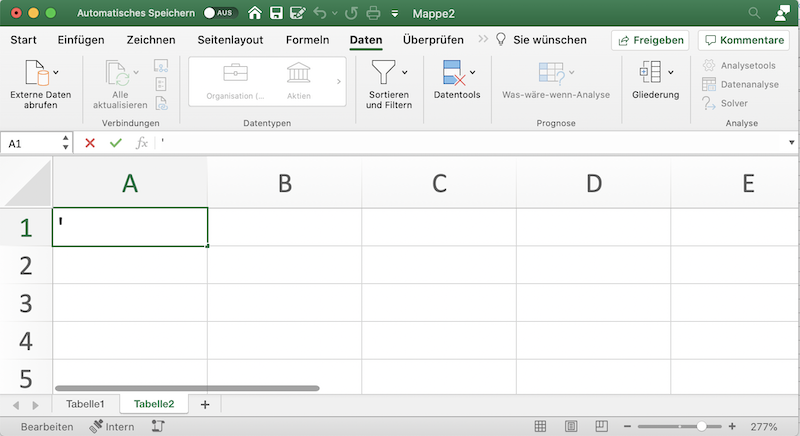

9 Zeichenketten
Bisher wurden Zeichenketten als Werte behandelt. In diesem Abschnitt geht es darum, wie Zeichenketten gesäubert, bearbeitet und aufgeteilt werden.
Wenn Daten als Zeichenketten vorliegen, dann handelt es sich immer um diskrete Daten.
| Name | Excel |
|---|---|
| Länge | LÄNGE() |
| Teilketten verknüpfen | TEXTKETTE()/TEXTVERKETTEN() |
| Teilzeichenkette finden | FINDEN()/SUCHEN() |
| In Grossbuchstaben umwandeln | GROSS() |
| In Kleinbuchstaben umwandeln | KLEIN() |
| Nur ersten Buchstaben als Grossbuchstabe | GROSS2() |
| Leerzeichen bereinigen | GLÄTTEN() |
| Nicht-druckbare Zeichen entfernen | SÄUBERN() |
| Teilkette extrahieren (linksseitig) | LINKS(), TEXTVOR() |
| Teilkette extrahieren (rechtsseitig) | RECHTS(),TEXTNACH() |
| Teilketten extrahieren (alle) | TEXTTEILEN() |
| Teilkette zwischen zwei Positionen extrahieren | TEIL() |
| Zeichenkette ersetzen | WECHSELN(), ERSETZEN() |
9.1 Die leere Zeichenkette
Ein besonderer Fall ist die leere Zeichenkette. Die leere Zeichenkette wird oft als Platzhalter genutzt. Die leere Zeichenkette ist das neutrale Element für die Verknüpfung von Zeichenketten mit TEXTKETTE() oder TEXTVERKETTEN().
In Excel lässt sich die leere Zeichenkette von der leeren Zelle nur unterscheiden, indem die Formel betrachtet wird oder die Zelle mit ISTLEER() (FALSCH) und ISTTEXT() (WAHR) überprüft wird.
Die leere Zeichenkette wird in Excel nur als Funktionsparameter durch doppelte Anführungszeichen eingerahmt. Soll eine leere Zeichenkette als Wert in eine Zelle eingegeben werden, dann ist ein einfacher Apostroph (’) einzugeben.
Beispiel 9.1 (Leere Zeichenkette in einer Excel-Formel)
=WENN(1 = 1; ""; "Fehler")Wenn in Excel eine leere Zeichenkette als Wert in eine Zelle eingetragen werden soll, dann wird ein einfaches Anführungszeichen als Wert eingegeben.

9.2 Nicht-druckbare Zeichen
In Excel werden die nicht-druckbaren Zeichen für die Darstellung und für Vergleiche entfernt, jedoch werden die nicht-druckbaren Zeichen bei der Länge und beim Extrahieren berücksichtigt. In Excel kann mit der IDENTISCH()-Funktion geprüft werden, ob zwei Zeichenketten die gleiche Symbolfolge beinhalten. .
Excel unter Windows stellt nicht-druckbare Zeichen als Kästchen dar, Excel für MacOS zeigt diese Zeichen nicht an.
Zu den nicht-druckbaren Zeichen gehören auch Leerzeichen, Tabulatoren und Zeilenumbrüche. Diese speziellen nicht-druckbaren Zeichen sind nur erkennbar, wenn sie von druckbaren Zeichen umgeben sind.
Deutlich wird das an den folgenden Zeichenketten:
HalloHal<0x07>lo, wobei das Symbol0x07für einen Piepton stehtHal<0x08>lo, wobei das Symbol0x08für einmal Rückwärtslöschen steht.
Diese drei Zeichenketten haben in Excel die Längen 5, 6 und 6. Excel stellt alle drei Zeichenketten als “Hallo” dar. Ausserdem werden die Zeichenketten als gleich ausgewertet.
Excel entfernt über die Funktion SÄUBERN() alle nicht-druckbare Zeichen aus einer Zeichenkette.
9.3 Zeichenketten trennen
9.3.1 Einzelne Symbole extrahieren
In Excel lassen sich die einzelnen Symbole einer Zeichenkette mit der folgenden Formel extrahieren:
=TEIL("Daten und Information";
SEQUENZ(LÄNGE("Daten und Information"));
1)Diese Formel hat drei Funktionsaufrufe.
- Die Funktion
LÄNGE()bestimmt die Anzahl der Symbole in der Zeichenkette. - Mit der Funktion
SEQUENZ()werdem alle Positionen der Symbole durchnummeriert. - Mit
TEIL(Zeichenkette; Sequenz; 1)wird ein Teil der Zeichenkette extrahiert, wobei für jede Position der Sequenz aus Schritt 2 eine Teilzeichenkette mit der Länge 1 erzeugt wird.
9.3.2 Zeichenketten vor und nach einem Trenner erhalten
Die Funktion LINKS() und RECHTS() geben eine Teilzeichenkette mit einer festen Anzahl von Zeichen zurück. Die Funktion LINKS() zählt die Anzahl der Zeichen vom Beginn der Zeichenkette und RECHTS() vom Ende her.
Beispiel 9.2 (Zeichen links bis und mit der 5. Position zurückgegeben)
= LINKS("Daten und Information"; 5)Weil RECHTS() vom Ende her zählt, kann nicht die gleiche Position wie bei LINKS() verwendet werden. Dazu muss die Position von der Gesamtlänge der Zeichenkette abgezogen werden (s. Beispiel 9.3).
Beispiel 9.3 (Zeichen rechts von der 10. Position zurückgegeben)
= RECHTS(
"Daten und Information";
LÄNGE("Daten und Information")-10)Etwas eleganter arbeiten die beiden Funktionen TEXTVOR() und TEXTNACH(). Diese Funktionen suchen nach einer Teilzeichenkette und ergeben die Zeichen vor bzw. nach dieser Zeichenkette. Ein zusätzlicher Parameter ermöglicht die Suche solange zu wiederholen, bis die gesuchte Zeichenkette genau so oft gefunden wurde.
Beispiel 9.4 (TEXTVOR() vor dem ersten Treffer)
= TEXTVOR("Daten und Information"; " ")Beispiel 9.5 (TEXTNACH() ab dem zweiten Treffer)
= TEXTNACH("Daten und Information"; " "; 2)Um einen Wert zwischen zwei Treffern zu extrahieren, lassen sich die beiden Funktionen verketten. Diese Technik bietet sich immer dann an, wenn ein Wert zwischen zwei unterschiedlichen Markierungen extrahiert werden soll
Beispiel 9.6 (Text zwischen zwei unterschiedlichen Teilketten extrahieren)
= TEXTVOR(TEXTNACH("Daten und Information"; "ten "); " Info")9.3.3 Festkodierte Werte trennen
Eine festkodierte Datenstruktur ist eine Zeichenkette, die Werte an festgelegten Positionen mit konstanten Längen enthält. Diese Daten lassen sich mit der Funktion TEIL() extrahieren.
Die Funktion hat drei Argumente:
- Die Zeichenkette, aus der die Daten extrahiert werden sollen.
- Die Position, an der die Daten beginnen.
- Die Länge der Daten als Anzahl von Symbolen.
Beispiel 9.7 (IBAN in Land, Prüfziffer, Bankkennung und Kontonummer trennen) Die IBAN ist eine festkodierte Datenstruktur. Die IBAN enthält die Länderkennung, die Prüfziffer, die Bankkennung und die Kontonummer. Die Länge der einzelnen Daten ist konstant und die Position der Felder ist festgelegt.
Feld Position Länge Land 1 2 Prüfziffer 3 2 Bankkennung 5 5 Kontonummer 10 Länge der IBAN - 10 Die (ungültige) IBAN
CH12BANK1002135135kann mit derTEIL()-Funktion in die einzelnen Felder zerlegt werden. Dazu müssen zuerst die Positionen und Längen der Felder erstellt werden. Dazu werden die Positionen und Längen der Felder untereinander geschrieben.
A B C D 1 3 5 10 2 2 5 = LÄNGE(IBAN_Nummer) - 10Diese Werte werden als Vektoren der Funktion
TEIL()übergeben.= TEIL(IBAN_Nummer; A1:D1; A2:D2)Die Funktion
TEIL()gibt die einzelnen Felder als Vektor zurück. Das Ergebnis ist{"CH"; "12"; "BANK1"; "002135135"}. Hier muss berücksichtigt werden, dass die einzelnen Felder weiterhin Zeichenketten sind.
9.3.4 Zeichenketten mit einem Separator trennen
Sind Werte in einer Zeichenkette durch einen Separator getrennt, dann lassen sich die Werte mit der Funktion TEXTTEILEN(). Die Funktion kann eine Zeichenkette entlang von zwei Trennzeichen trennen. Dabei erzeugt die Funktion eine Matrix, wobei die Spalten durch den ersten Separator und die Zeilen durch den zweiten Separator bestimmt werden.
Beispiel 9.8 (TEXTTEILEN() mit festem Trennzeichen)
= TEXTTEILEN("Daten und Information", " ")Die Funktion TEXTTEILEN() kann nur auf einen Wert angewandt werden. Wird ein Zeichenkettenvektor der Funktion übergeben, wird aus jeder Zeichenkette immer nur der erste Wert getrennt und als Ergebnis ausgegeben. Excel verhindert so, dass durch das Teilen mehrerer Zeichenketten die Ergebnisse einen nicht eindeutig grossen rechteckigen Bereich mit Datentyp Zeichenkette erzeugen könnten.
Dieses Problem wird durch einen Trick umgangen: Dazu wird ein zweiter Separator gewählt, der nicht in den Daten vorkommt und sich vom ursprünglichen Separator unterscheidet. Existiert bereits ein Zeilentrennzeichen in den Daten, wird dieses als zweiter Separator verwendet. Anschliessend werden alle Zeichenketten mit diesem zweiten Separator als Trennzeichen mit TEXTVERKETTEN() verkettet. Abschliessend wird die gesamte Zeichenkette mit dem ursprüngliche Separator als Spalten- und dem zweiten Separator als Zeilentrennzeichen getrennt. Dabei werden alle nicht vorhandenen Werte in einer Zeile durch #NV angezeigt.
Beispiel 9.9 trennt einen Zeichenkettenvektor mit Werten, die durch ein Leerzeichen getrennt sind. Alle Werte sind Buchstaben oder Ziffern, aber keine Satzzeichen. Deshalb kann das Komma (,) als Zeilentrennzeichen verwendet werden. Damit der Fehlerwert #NV nachfolgende Operationen nicht behindert, wird dieser durch die leere Zeichenkette ersetzt.
Beispiel 9.9 (Einen Zeichenkettenvektor entlang eines Trennzeichens teilen.)
=WENNFEHLER(
TEXTTEILEN(
TEXTVERKETTEN(",";; Zeichenketten);
" ";
",");
""
)9.4 Suchen und Ersetzen
Eine wichtige Operation für Zeichenketten ist das Suchen-und-Ersetzen. Das Suchen-und-Ersetzen lässt sich als eine spezielle Technik zur Mustererkennung vorstellen. Dabei steht eine Anwendung im Vordergrund: Die Korrektur und Vereinheitlichung von Zeichenketten. Anstatt solche Daten umständlich über eine Benutzeroberfläche zu korrigieren, sollte das Bereinigen von Zeichenketten besser automatisch erfolgen. Excel stellt dazu die Funktion WECHSELN() zur Verfügung. Diese Funktion ersetzt entweder alle Vorkommnisse einer Teilzeichenkette oder nur ihr n-tes Auftreten.
Beispiel 9.10 (Alle Vorkommnisse einer Zeichenkette ersetzen)
= WECHSELN(
"Daten oder Information oder Wahrscheinlichkeit";
"oder";
"und")Beispiel 9.11 (Erstes Auftreten einer Zeichenkette ersetzen)
= WECHSELN(
"Daten oder Information oder Statistik";
"oder";
"und";
1)9.4.1 Löschen von Teilzeichenketten
Teilzeichenketten lassen sich löschen, indem die fragliche Zeichenkette durch die leere Zeichenkette ersetzt wird.
Beispiel 9.12 (Teilzeichenkette entfernen)
= WECHSELN("Daten und Information"; "und"; "")9.4.2 Zeichenketten durch Ersetzungen vereinheitlichen
Bevor das eigentliche Suchen-und-Ersetzen starten kann, sollten die betreffenden Zeichenketten bereinigt werden. Die einfachste Bereinigung ist das Entfernen von überschüssigen Leerzeichen. Dazu dient die Excel Funktion GLÄTTEN(). GLÄTTEN() entfernt alle Leerzeichen am Anfang und Ende einer Zeichenkette. Alle wiederholten Leerzeichen werden mit GLÄTTEN() zu einem einzelnen Leerzeichen zusammengefasst.
Eine zweite häufig verwendete Bereinigung ist die Transformation auf Kleinbuchstaben oder Grossbuchstaben. Hierzu dienen die drei Funktionen GROSS(), GROSS2() und KLEIN(). Die Vereinheitlichung der Schreibweise ist ein wichtiges Werkzeug um Zeichenketten mit unterschiedlichen Schreibweisen zu vereinheitlichen. Beim Bereinigen sollte eine der verfügbaren Varianten gewählt und konsequent für die Vereinheitlichung verwendet werden. Damit wird sicher gestellt, dass alle Ersetzungen unabhängig von der Schreibweise erfolgen.
Für das eigentliche Ersetzen wird ein Suchvektor und einen Ersetzenvektor erzeugt. Die beiden Vektoren enthalten Paare aus Suchmuster und Ersetzung. Diese Paare sind geordnet und werden nacheinander ausgeführt.
Satzzeichen sollte immer durch Leerzeichen und nicht durch eine leere Zeichenkette ersetzt werden. Die überzähligen Leerzeichen können anschliessend mit GLÄTTEN() entfernt werden. Dadurch ist gesichert, dass nicht versehentlich Elemente zusammengefügt werden. Nachdem alle Sonderzeichen entfernt wurden, sollte eine Zeichenkette noch einmal von überschüssigen Leerzeichen bereinigt werden.